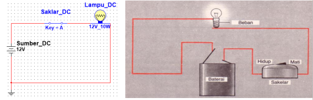
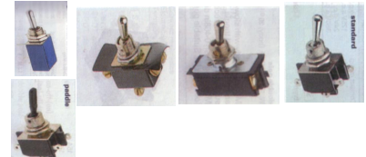
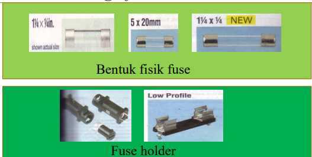
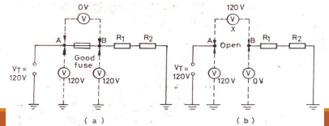
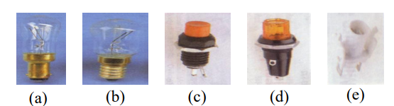

Saklar
Saklar listrik atau switch adalah
- Suatu alat untuk membuka dan menutup suatu rangkaian listrik,
- Atau untuk memasukkan kembali suatu sinyal listrik ke dalam suatu rangkaian listrik.
- Posisi menutup adalah on . Pada posisi ini resistansi sangat kecil. Karena itu, arus maksimum dapat mengalir ke beban dengan jatuh tegangan praktis 0 volt.
- Posisi menutup adalah on . Pada posisi ini resistansi sangat kecil. Karena itu, arus maksimum dapat mengalir ke beban dengan jatuh tegangan praktis 0 volt.
Saklar pada Rangkaian
Pada rangkain listrik, saklar dihubungkan secara seri terhadap beban (lampu) dan sumber tegangan (Baterai)

Karakteristik Switch
Selain ukuran mekanis dan jenisnya, pertimbangan berikut harus diperhatikan dalam memilih saklar:
- Tegangan maksimum (off)
- Arus maksimum (on)
- Resistansi terbuka (off)
- Resistansi menutup (on)
Saklar yang paling umumdigunakan dalam elektronik adalah:
- Toggle switch
- Slide switch
- Push button switch
- Rotary switch
Toggle Switch
Penggerak dari toggle switch adalah penyambung toggle yang diberi beban per, sehingga dapat menghasilkan satu pemindahan kontak yang sangat cepat.

Pemakaian:
- Power Supply (on/off)
- Switching over berbagai fungsi peralatan elektronika
Fuse
- Pemasangan fuse berguna untuk mencegah kejadian beban lebih,
utamanya yang diakibatkan oleh terjadinya hubung singkat.
- Hubung singkat akan mengakibatkan aliran listrik yang berlebihan
dalam rangkaian, sehingga menyebabkan rusaknya rangkaian.
- Dengan penggunaan fuse, maka fuse akan terputus dulu sebelum
rangkaian rusak.
- Elemen fuse bisa terbuat dari aluminium, tembaga yang dilapisi oleh
timah atau nikel.
- Fuse tersedia di pasaran dengan rating arus 1/500 Ampere sampai beberapa ratus ampere.
- Elemen fuse mempunyai resistansi yang sangat rendah.
Fuse Dalam Rangkaian Elektronik
- Fuse yang sering digunakan dalam rangkaian elektronik adalah
‘glass cartridge fuse’.
- Glass cartridge fuse tersedia dalam 2 ukuran
- 5 mm diameter x 20 mm panjang (standar Eropa)
- ½ inch diameter x 1½ inch panjang (standar Amerika)
- Dalam rating arus dari 50 mA sampai 10 A fuse tersebut dipasang dalam fuse holder yang ditempel pada panel atau PCB.
Glass cartridge fuse dan holder

Slow Blow Fuse
- Fuse jenis ini mempunyai coil/kumparan.
- Fuse ini dirancang hanya pada arus atau beban lebih yang terjadi
secara kontinyu, misalnya hubung singkat.
- Fuse ini dirancang hanya pada arus atau beban lebih yang terjadi
secara kontinyu, misalnya hubung singkat.
- Sebagai contoh, ‘slow blow fuse 1A’ akan mampu menahan 400%
arus lebih hingga 2 detik.
Pengetesan Fuse
- Fuse yang terbakar menunjukkan harga bacaan tak terhingga.
- Untuk mengetes fuse dengan ohmmeter, maka daya harus dimatikan dan fuse
dicabut.
- Namun bila sulit dibuka, maka dapat digunakan rangkaian gambar 2.11 untuk
mengukurnya (a) fuse bagus dan (b) fuse yang putus

Pilot Lamp
- Lampu yang digunakan sebagai indicator yang menunjukkan bahwa
suatu peralatan dalam posisi ‘on’
- a) Bayonet base, (b) Screw base, (c) Lampu miniature dengan soket
screw, (d) lampu miniature dengan soket bayonet, (e) soket
